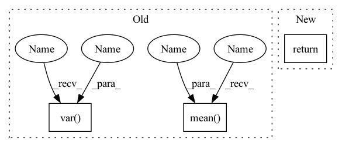

Pattern ID :371
Before Change
:type inverse: bool, optional
if train:
self._parallel_variance(torch.mean(x , dim=0) , torch.var(x , dim=0) , x.shape[0])
// scale back the data to the original representation
if inverse:After Change
if no_grad:
with torch.no_grad():
return self._compute(x, train, inverse)
else:
return self._compute(x, train, inverse)In pattern: SUPERPATTERN
Frequency: 3
Non-data size: 3
Instances Fragment ID: 1490086
Project Name: toni-sm/skrl
Commit Name: 3ff78a027e492182b7e8d539ce2233a89cdf9bc0
Time: 2022-07-08
Author: toni.semu@gmail.com
File Name: skrl/resources/preprocessors/torch/running_standard_scaler.py
M Class Name: RunningStandardScaler
N Class Name: RunningStandardScaler
M Method Name: forward(5)
N Method Name: forward(4)
M Parent Class: nn.Module
N Parent Class: nn.Module
M File Name: skrl/resources/preprocessors/torch/running_standard_scaler.py
N File Name: skrl/resources/preprocessors/torch/running_standard_scaler.py
M Start Line: 122
M End Line: 132
N Start Line: 115
N End Line: 150
Before Change
def forward(self, x):
eps = 1e-5 if x.dtype == torch.float32 else 1e-3
var = torch.var( x, dim = 1, unbiased = False, keepdim = True)
mean = torch.mean( x, dim = 1, keepdim = True)
return (x - mean) * var.clamp(min = eps).rsqrt() * self.g
class PreNorm(nn.Module):
def __init__(self, dim, fn):After Change
self.register_buffer("beta", torch.zeros(dim))
def forward(self, x):
return F.layer_norm(x, x.shape[-1:], self.gamma, self.beta)
// positional embeds
Fragment ID: 1490084
Project Name: lucidrains/recurrent-interface-network-pytorch
Commit Name: 627fa4e8c36a59b89f571cdfdb478a7b72cbf855
Time: 2022-12-24
Author: lucidrains@gmail.com
File Name: rin_pytorch/rin_pytorch.py
M Class Name: LayerNorm
N Class Name: LayerNorm
M Method Name: forward(2)
N Method Name: forward(2)
M Parent Class: nn.Module
N Parent Class: nn.Module
M File Name: rin_pytorch/rin_pytorch.py
N File Name: rin_pytorch/rin_pytorch.py
M Start Line: 83
M End Line: 86
N Start Line: 77
N End Line: 77
Before Change
:type inverse: bool, optional
if train:
self._parallel_variance(torch.mean( x, dim=0) , torch.var( x, dim=0) , x.shape[0])
// scale back the data to the original representation
if inverse:After Change
with torch.no_grad():
return self._compute(x, train, inverse)
else:
return self._compute(x, train, inverse) Fragment ID: 1490085
Project Name: toni-sm/skrl
Commit Name: 3ff78a027e492182b7e8d539ce2233a89cdf9bc0
Time: 2022-07-08
Author: toni.semu@gmail.com
File Name: skrl/resources/preprocessors/torch/running_standard_scaler.py
M Class Name: RunningStandardScaler
N Class Name: RunningStandardScaler
M Method Name: forward(5)
N Method Name: forward(4)
M Parent Class: nn.Module
N Parent Class: nn.Module
M File Name: skrl/resources/preprocessors/torch/running_standard_scaler.py
N File Name: skrl/resources/preprocessors/torch/running_standard_scaler.py
M Start Line: 122
M End Line: 132
N Start Line: 115
N End Line: 150
Before Change
self.g = nn.Parameter(torch.ones(dim))
def forward(self, x):
var = torch.var( x, dim = -1, unbiased = False, keepdim = True)
mean = torch.mean( x, dim = -1, keepdim = True)
return (x - mean) / (var + self.eps).sqrt() * self.g
// parallel with residual
// discovered by Wang et al + EleutherAI from GPT-J fameAfter Change
self.register_buffer("beta", torch.zeros(dim))
def forward(self, x):
return F.layer_norm(x, x.shape[-1:], self.gamma, self.beta)
// parallel with residual
// discovered by Wang et al + EleutherAI from GPT-J fame Fragment ID: 1490083
Project Name: lucidrains/palm-pytorch
Commit Name: 0832087f78006c10d52c0600c7377c5929568e0b
Time: 2022-04-04
Author: lucidrains@gmail.com
File Name: palm_pytorch/palm_pytorch.py
M Class Name: LayerNorm
N Class Name: LayerNorm
M Method Name: forward(2)
N Method Name: forward(2)
M Parent Class: nn.Module
N Parent Class: nn.Module
M File Name: palm_pytorch/palm_pytorch.py
N File Name: palm_pytorch/palm_pytorch.py
M Start Line: 18
M End Line: 20
N Start Line: 19
N End Line: 19